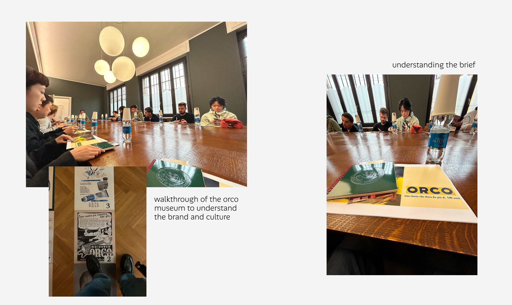

What is ORCO?
ORCO is a heritage Italian sauce and condiment brand built on generations of craftsmanship and ingredient quality. This project explored how its digital experience could evolve from a traditional product-focused website into a more engaging culinary platform.
My Role
As UX/UI Designer, I led research and visual direction — shaping how ORCO's heritage could become something people actively explore
CONTEXT

What if a sauce brand could be explored, not just bought?
ORCO's strength is its history — but most visitors only ever see a product list. The opportunity was to turn that heritage into an experience.
Consumers increasingly want to understand what they are buying, where it comes from, how it is made, and how it fits into their lifestyle.
Tracing ingredients from sourcing to bottle became a central part of the concept.